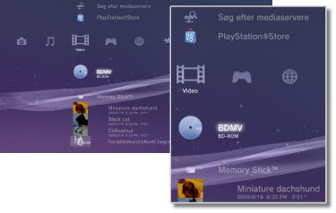

Video > Videokategori
Videokategori
Følgende ikoner vises under  (Video). De viste ikoner afhænger af brugsbetingelserne.
(Video). De viste ikoner afhænger af brugsbetingelserne.

 |
BD-dataredskab | Dette ikon betyder, at de administrative data, der bruges af Blu-ray-disks (BD'er), gemmes. |
|---|---|---|
 |
Søg efter mediaservere | Dette ikon betyder, at du kan starte en søgning efter DLNA-medieservere, der er tilsluttet samme netværk. |
 |
Medieserver | Dette ikon betyder, at du kan oprette forbindelse til DLNA-medieservere og afspille gemte videofiler. Det viste ikon afhænger af servertypen. |
 |
PlayStation®Store | Se oplysninger fra PlayStation®Store. Dette ikon vises kun i lande og regioner, hvor videobutikken for PlayStation®Store er tilgængelig. |
 |
BD-ROM/BD-R/BD-RE | Afspil en Blu-ray Disc (BD). |
 |
DVD-ROM / DVD-R / DVD+R / DVD-RW / DVD+RW | Dette ikon betyder, at der afspilles en dvd eller en AVCHD-disk. |
 |
Data Disk | Dette ikon betyder, at du kan afspille videofiler, der er gemt på kompatible optagemedier, f.eks. en cd-r eller dvd-r. |
 |
Memory Stick™ | Afspil videofiler, der er gemt på Memory Stick™-medier.* |
 |
SD Memory Card | Afspil videofiler, der er gemt på et SD-hukommelseskort.* |
 |
CompactFlash® | Afspil videofiler, der er gemt på CompactFlash®.* |
 |
PSP™ (PlayStation®Portable) | Afspil videofiler, der er gemt på et PSP™-systems Memory Stick™-medier. |
 |
PSP™ (PlayStation®Portable) | Afspil videofiler, som er gemt i PSP™-go systemets systemlager. |
 |
Digitalkamera | Få vist videofiler, der er gemt i et digitalkamera, som er kompatibelt med PS3™-systemet. |
 |
WALKMAN®/ATRAC Audio Device(WALKMAN®) | Dette ikon betyder, at du kan afspille videofiler, der er gemt på en WALKMAN®/ATRAC Audio Device (WALKMAN®). |
 |
ATRAC Audio Device | Dette ikon betyder, at du kan afspille videofiler, der er gemt på en ATRAC Audio Device. |
 |
USB enhed | Afspil videofiler, der er gemt på en USB-lagerenhed. |
 |
Filmer fra digitalkamera | Afspil videofiler, der er gemt i DCIM-mappen på lagermediet. |
|
(mappe) | Dette ikon vises for mapper, der er oprettet på lagermediet vha. en PC. |
 |
(filer gemt på harddisken) | Afspil videofiler, der er gemt på PS3™-systemets harddisk. Der vises miniaturebilleder. |
 |
(data gemt på harddisken) | Dette ikon vises for videofiler, der downloades til harddisken. Dataene installeres, og videofilen afspilles, når ikonet vælges. |
| * |
Visse modeller kræver en bestemt USB-adapter (medfølger ikke) ved brug af lagermedier. Hvis lagermedier bruges sammen med en USB-adapter, vises de som |
|---|
 (USB enhed).
(USB enhed).Tips
- Yderligere oplysninger om DLNA findes i denne vejledning under
 (Indstillinger) >
(Indstillinger) >  (Netværksindstillinger) > [Mediaserverforbindelse].
(Netværksindstillinger) > [Mediaserverforbindelse]. - Hvis systemet skal afspille en Blu-ray-disk, der er beskyttet af ophavsret, ved en opløsning på 1080p, skal du bruge et HDMI-kabel og slutte systemet til en enhed, der er kompatibel med HDCP-standarden (High-bandwidth Digital Content Protection).
- Der vises ikke miniaturebilleder for alle typer videofiler, der er beskyttet af ophavsret.
- Når der afspilles en BD, som har indhold med forældrekontrol, begrænses afspilningen iht. det forældrekontrolniveau, der er indstillet i PS3™-systemet. BD-forældrekontrolniveauet kan justeres under (Indstillinger) >
 (Sikkerhedsindstillinger).
(Sikkerhedsindstillinger). - Når der afspilles en dvd, som har indhold med forældrekontrol, kræves der muligvis en adgangskode for at gengive indholdet. Adgangskoden kan indstilles under (Indstillinger) > (Sikkerhedsindstillinger).
- Indhold med forældrekontrol vises som
 . Du kan aktivere afspilning af sådant indhold ved at indtaste en 4-cifret adgangskode.Adgangskoden kan angives eller ændres under (Indstillinger) > (Sikkerhedsindstillinger).
. Du kan aktivere afspilning af sådant indhold ved at indtaste en 4-cifret adgangskode.Adgangskoden kan angives eller ændres under (Indstillinger) > (Sikkerhedsindstillinger). - Disk-låste BD'er vises som
 . Hvis du vil afspille indholdet på sådanne diske, skal du indtaste adgangskoden, der er fastlagt af udvikleren af disken.
. Hvis du vil afspille indholdet på sådanne diske, skal du indtaste adgangskoden, der er fastlagt af udvikleren af disken. - Lejeindhold, som downloades fra PlayStation®Store, vises som
 .
. - I sjældne tilfælde vil diske og andre medier muligvis ikke fungere ordentligt, hvis de afspilles på PS3™-systemet. Dette skyldes primært variationer i produktionsprocessen eller kodningen af softwaren.
- Hvis der sluttes en enhed, som ikke er kompatibel med HDCP-standarden (High-bandwidth Digital Content Protection), til systemet vha. et HDMI-kabel, kan der ikke sendes video og/eller lyd fra systemet.
Lokalt lagringsmedie og Blu-ray Disc (BD)
Hvis du får vist en fejlmeddelelse under en BD-afspilning om, at der ikke er nok plads på det lokale lagringsmedie, skal du slette unødvendige filer på harddisken for at frigøre plads.
Det lokale lagringsmedie er et datalagringsområde, der er defineret af standarderne for BD-ROM Profile 1.1/2.0. Dataene gemmes på PS3™-systemets harddisk.